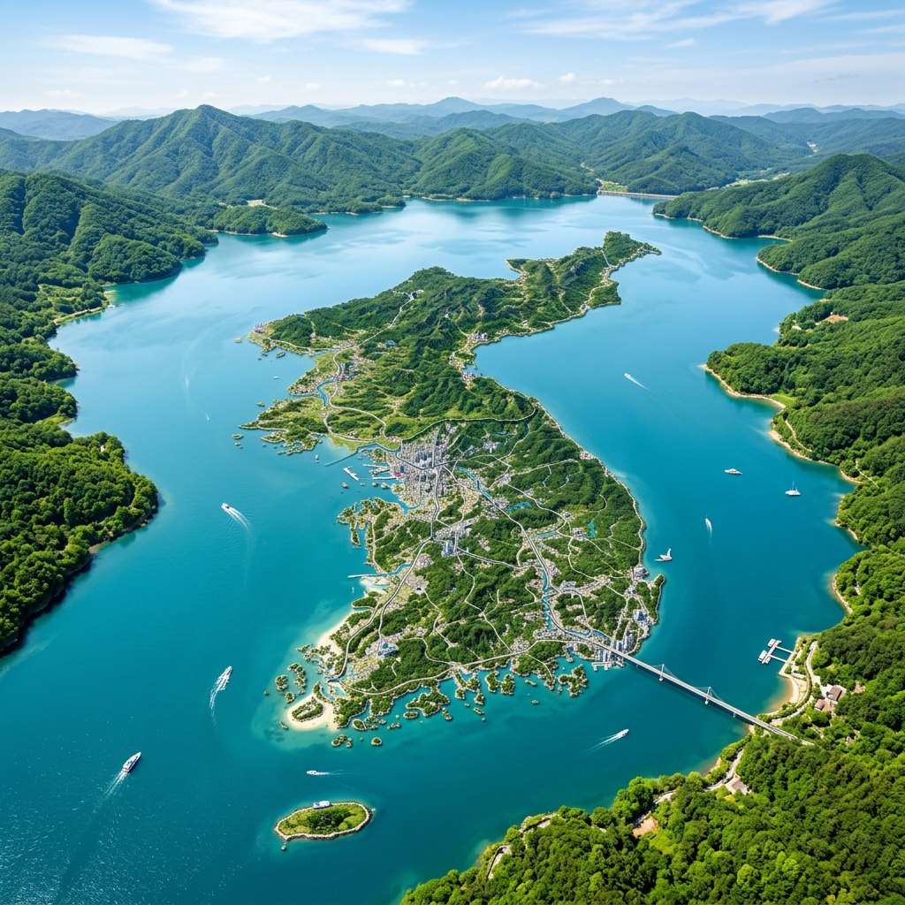
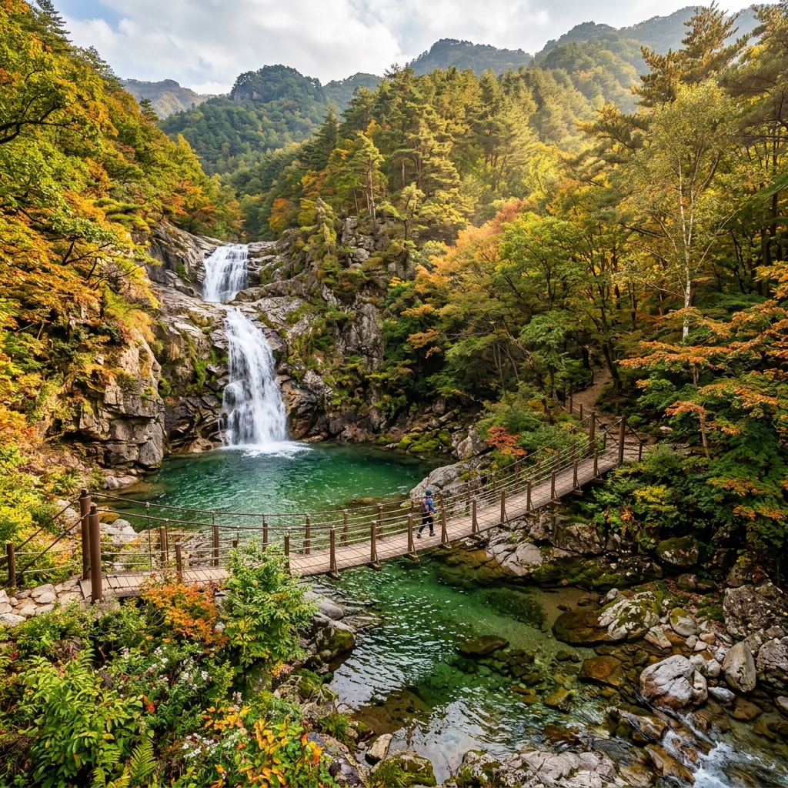
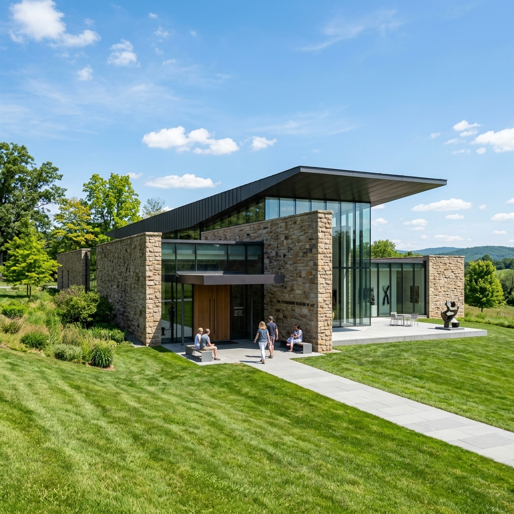

양구에서만 만날 수 있는 특별하고 아름다운 풍경들을 소개합니다.



양구의 맑은 바람과 깨끗한 이슬을 먹고 자란 귀여운 아기 곰 '고미'를 소개합니다!
머리에 곰의 발바닥을 닮고 사랑스러운 하트 모양을 한 양구 명품 곰취 잎을 쏙 뒤집어쓰고 있어요.
양구의 때 묻지 않은 청정 자연을 사랑하고, 여행자들에게 아름다운 비경을 소개해 주는 것이 고미의 취미랍니다. 양구 여행 중에 고미를 만나면 반갑게 인사해주세요!
양구의 때 묻지 않은 청정 자연을 온전히 느낄 수 있는 힐링 당일치기 코스입니다. 희귀 식물들이 가득한 양구수목원을 시작으로 파로호의 아름다운 생태탐방로를 거쳐, 천혜의 비경인 민통선 내 두타연에서 몸과 마음의 평온을 찾아보세요.
예술과 역사가 공존하는 양구의 인문학적 감성을 채우는 코스입니다. 한국 근현대 미술의 거장 박수근 화백의 발자취를 따라가 보고, 구석기부터 근현대까지 이어지는 양구의 깊은 역사를 한눈에 살펴볼 수 있습니다.
양구 여행에 대해 궁금한 점이나 의견이 있으시면 보내주세요. 신속하고 친절하게 답변해 드리겠습니다.
강원특별자치도 양구군 양구읍 관공서로 38
문의사항을 작성해 주시면 담당자 이메일로 바로 안전하게 배달해 줄게!